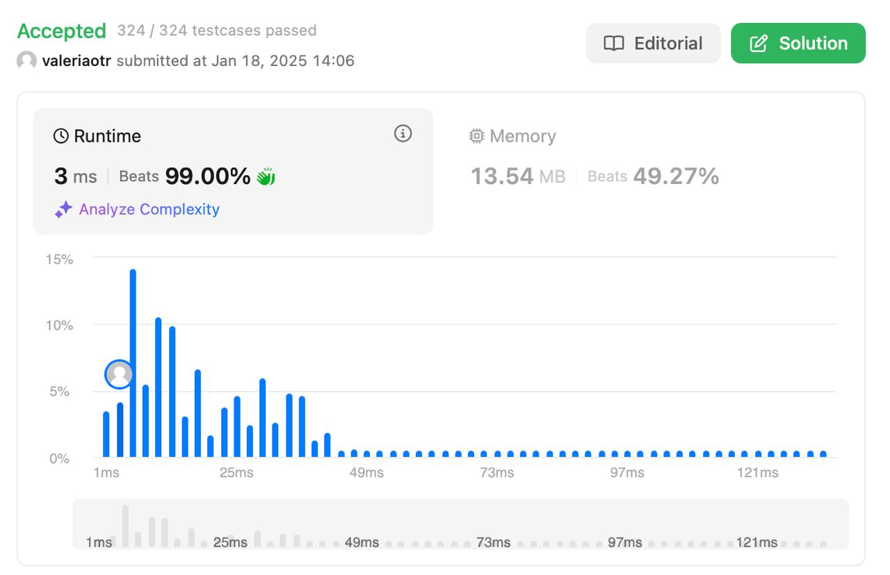

Trapping Rain Water
Level: Hard
Description
Given n non-negative integers representing an elevation map where the width of each bar is 1, compute how much water it can trap after raining.
Example 1:
Input:
height = [0,1,0,2,1,0,1,3,2,1,2,1]
Output:
6
Explanation:
The above elevation map (black section) is represented by array [0,1,0,2,1,0,1,3,2,1,2,1]. In this case, 6 units of rainwater (blue section) are being trapped.
Example 2:
Input:
height = [4,2,0,3,2,5]
Output:
9
Constraints:
n == height.length1 <= n <= 2 * 10^40 <= height[i] <= 10^5
Solution
Решение использует двухуказательную технику для вычисления объема задержанной воды за (O(n)) времени и (O(1)) памяти.
Основные шаги:
- Инициализация:
- Два указателя:
left(начало массива) иright(конец массива). -
Переменные
left_maxиright_maxдля отслеживания максимальных высот слева и справа. -
Сравнение высот:
- Если
height[left] < height[right], то:- Если
height[left] >= left_max, обновляемleft_max. - Иначе добавляем разницу
left_max - height[left]к общему количеству задержанной воды. - Сдвигаем указатель
leftвправо.
- Если
-
Если
height[left] >= height[right], аналогично обрабатываем правую сторону с обновлениемright_maxи сдвигом указателяrightвлево. -
Возврат результата:
- После завершения цикла возвращается сумма задержанной воды, сохраненная в
water_trapped.
Примечания:
- Решение оптимально для больших массивов из-за линейной сложности.
- Метод эффективно использует только (O(1)) дополнительной памяти для хранения указателей и переменных максимальной высоты.
Result
